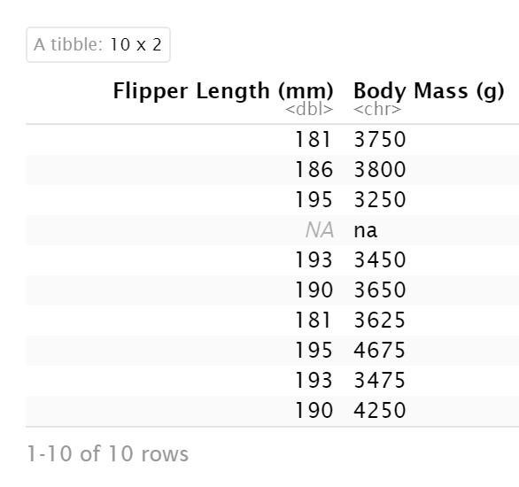

Chapter 3 Working with data
In this workshop we work through loading data. Once we have a curated and cleaned dataset we can work on generating insights from the data.
As a biologist you should be used to asking questions and gathering data. It is also important that you learn all aspects of the research process. This includes responsible data management (understanding data files & spreadsheet organisation, keeping data safe) and data analysis.
In this chapter we will look at the structure of data files, and how to read these with R. We will also continue to develop reproducible scripts. This means that we are writing scripts that are well organised and easy to read, and also making sure that our scripts are complete and capable of reproducing an analysis from start to finish.
Transparency and reproducibility are key values in scientific research, when you analyse data in a reproducible way it means that others can understand and check your work. It also means that the most important person can benefit from your work, YOU! When you return to an analysis after even a short break, you will be thanking your earlier self if you have worked in a clear and reproducible way, as you can pick up right where you left off.
3.1 Meet the Penguins
We have chosen to continue working with a dataset you have been introduced to already - the Palmer Penguins dataset. Previously we loaded a cleaned dataset, very quickly using an R package. Today we will be working in a more realistic scenario - uploading our data from a spreadsheet into our R workspace.
This data, taken from the palmerpenguins (Horst et al. (2020)) package was originally published by Gorman et al. (2014). In our course we will work with real data that has been shared by other researchers.
The palmer penguins data contains size measurements, clutch observations, and blood isotope ratios for three penguin species observed on three islands in the Palmer Archipelago, Antarctica over a study period of three years.

These data were collected from 2007 - 2009 by Dr. Kristen Gorman with the Palmer Station Long Term Ecological Research Program, part of the US Long Term Ecological Research Network. The data were imported directly from the Environmental Data Initiative (EDI) Data Portal, and are available for use by CC0 license (“No Rights Reserved”) in accordance with the Palmer Station Data Policy. We gratefully acknowledge Palmer Station LTER and the US LTER Network. Special thanks to Marty Downs (Director, LTER Network Office) for help regarding the data license & use. Here is our intrepid package co-author, Dr. Gorman, in action collecting some penguin data:

Here is a map of the study site

3.2 Activity 1: Organising our workspace
Before we can begin working with the data, we need to do some set-up.
Go to RStudio Cloud and open this week's R project
Create the following folders using the + New Folder button in the Files tab
- data
- figures
- scripts
R is case-sensitive so type everything exactly as printed here
Having these separate subfolders within our project helps keep things tidy, means it's harder to lose things, and lets you easily tell R exactly where to go to retrieve data.
The next step of our workflow is to have a well organised project space. RStudio Cloud does a lot of the hard work for you, each new data project can be set up with its own Project space.
We will define a project as a series of linked questions that uses one (or sometimes several) datasets. For example a coursework assignment for a particular module would be its own project, or eventually your final year research project.
A Project will contain several files, possibly organised into sub-folders containing data, R scripts and final outputs. You might want to keep any information (wider reading) you have gathered that is relevant to your project.

Figure 3.1: An example of a typical R project set-up
Within this project you will notice there is already one file .Rproj. This is an R project file, this is a very useful feature, it interacts with R to tell it you are working in a very specific place on the computer (in this case the cloud server we have dialed into). It means R will automatically treat the location of your project file as the 'working directory' and makes importing and exporting easier1.
3.3 Activity 2: Access our data
Now that we have a project workspace, we are ready to import some data.
Use the link below to open a page in your browser with the data open
Right-click Save As to download in csv format to your computer (Make a note of where the file is being downloaded to e.g. Downloads)
Compare how the data looks in "raw" format to when you open the same data with Excel
At first glance the data might look quite strange and messy. It has been stored as a CSV or comma-separated values file. CSV files are plain text files that can store large amounts of data, and can readily be imported into a spreadsheet or storage database.
These files are the simplest form of database, no coloured cells, no formulae, no text formatting. Each row is a row of the data, each value of a row (previously separate columns) is separated by a comma.
This file format helps us maintain an ethos Keep Raw Data Raw -
In many cases, the captured or collected data may be unique and impossible to reproduce, such as measurements in a lab or field observations. For this reason, they should be protected from any possible loss. Every time a change is made to a raw data file it threatens the integrity of that information.
In practice, that means we only use our data file for data entry and storage. All the data manipulation, cleaning and analysis happens in R, using transparent and reproducible scripts.
We avoid saving files in the Excel format because they have a nasty habit of formatting or even losing data when the file gets large enough.
If you need to add data to a csv file, you can always open it in an Excel-like program and add more information, but remember to save it in the original csv format afterwards.

Figure 3.2: Top image: Penguins data viewed in Excel, Bottom image: Penguins data in native csv format
In raw format, each line of a CSV is separated by commas for different values. When you open this in a spreadsheet program like Excel it automatically converts those comma-separated values into tables and columns.
3.4 Activity 3: Upload our data
The data is now in your Downloads folder on your computer
We need to upload the data to our remote cloud-server (RStudio Cloud), select the upload files to server button in the Files tab
Put your file into the data folder - if you make a mistake select the tickbox for your file, go to the cogs button and choose the option Move.

Figure 3.3: Highlighted the buttons to upload files, and more options
3.5 Activity 4: Make a script
Let's now create a new R script file in which we will write instructions and store comments for manipulating data, developing tables and figures. Use the File > New Script menu item and select an R Script.
Add the following:
#___________________________----
# SET UP ---
## An analysis of the bill dimensions of male and female Adelie, Gentoo and Chinstrap penguins ----
### Data first published in Gorman, KB, TD Williams, and WR Fraser. 2014. “Ecological Sexual Dimorphism and Environmental Variability Within a Community of Antarctic Penguins (Genus Pygoscelis).” PLos One 9 (3): e90081. https://doi.org/10.1371/journal.pone.0090081. ----
#__________________________----Then load the following add-on package to the R script, just underneath these comments. Tidyverse isn't actually one package, but a bundle of many different packages that play well together - for example it includes ggplot2 which we used in the last session, so we don't have to call that separately
# PACKAGES ----
library(tidyverse) # tidy data packages
library(janitor) # cleans variable names
library(lubridate) # make sure dates are processed properly
#__________________________----01_import_penguins_data.R
3.6 Activity 5: Read in data
Now we can read in the data. To do this we will use the function read_csv() that allows us to read in .csv files. There are also functions that allow you to read in .xlsx files and other formats, however in this course we will only use .csv files.
- First, we will create an object called
penguins_datathat contains the data in thepenguins_raw.csvfile.
# IMPORT DATA ----
penguins_data <- read_csv ("data/penguins_raw.csv")
head(penguins_data) # check the first lines of the dataframe
#__________________________----
There is also a function called read.csv(). Be very careful NOT to use this function instead of read_csv() as they have different ways of naming columns.
3.6.1 Filepath
3.7 Activity 6: Clean the data
We are going to learn how to organise data using the tidy format2. This is because we are using the tidyverse packages Wickham (2021). This is an opinionated, but highly effective method for generating reproducible analyses with a wide-range of data manipulation tools. Tidy data is an easy format for computers to read.
Here 'tidy' refers to a specific structure that lets us manipulate and visualise data with ease. In a tidy dataset each variable is in one column and each row contains one observation. Each cell of the table/spreadsheet contains the values. One observation you might make about tidy data is it is quite long - it generates a lot of rows of data.

So we know our data is in R, and we know the columns and names have been imported. But we still don't know whether all of our values imported, or whether it captured all the rows.
There are lots of different ways to view and check data. One useful method is glimpse
# CHECK DATA ----
# check the data
colnames(penguins_data)
#__________________________----When we run colnames() we get the identities of each column in our dataframe
Study name: an identifier for the year in which sets of observations were made
Region: the area in which the observation was recorded
Island: the specific island where the observation was recorded
Stage: Denotes reproductive stage of the penguin
Individual ID: the unique ID of the individual
Clutch completion: if the study nest observed with a full clutch e.g. 2 eggs
Date egg: the date at which the study nest observed with 1 egg
Culmen length: length of the dorsal ridge of the bird's bill (mm)
Culmen depth: depth of the dorsal ridge of the bird's bill (mm)
Flipper Length: length of bird's flipper (mm)
Body Mass: Bird's mass in (g)
Sex: Denotes the sex of the bird
Delta 15N : the ratio of stable Nitrogen isotopes 15N:14N from blood sample
Delta 13C: the ratio of stable Carbon isotopes 13C:12C from blood sample
3.7.1 Refine variable names
Often we might want to change the names of our variables. They might be non-intuitive, or too long. Our data has a couple of issues:
Some of the names contain spaces
Some of the names contain brackets
R does not like these so let's correct these quickly.
# CLEAN DATA ----
# clean all variable names to snake_case using the clean_names function from the janitor package
# note we are using assign <- to overwrite the old version of penguins with a version that has updated names
# this changes the data in our R workspace but NOT the original csv file
penguins <- janitor::clean_names(penguins) # clean the column names
colnames(penguins) # quickly check the new variable namesThe clean_names function quickly converts all variable names into snake case. The N and C blood isotope ratio names are still quite long though, so let's clean those with dplyr::rename() where "new_name" = "old_name".
# shorten the variable names for N and C isotope blood samples
penguins <- rename(penguins,
"delta_15n"="delta_15_n_o_oo", # use rename from the dplyr package
"delta_13c"="delta_13_c_o_oo")3.7.2 Check data format
When we run glimpse() we get several lines of output. The number of observations "rows", the number of variables "columns". Check this against the csv file you have - they should be the same. In the next lines we see variable names and the type of data.
glimpse(penguins)We can see a dataset with 345 rows (including the headers) and 17 variables It also provides information on the type of data in each column
<chr>- means character or text data<dbl>- means numerical data
Is body_mass_g in the correct data format?
This is where we start to use some of the core functions from tidyverse.
If R thinks Body Mass (g) is a character variable, then it probably contains some words as well as numbers. So let's have a look at this and compare it to another column that IS treated as numerical.
# check for the unique values in body_mass_g
select(penguins,
body_mass_g,
flipper_length_mm)
One feature that will quickly become apparent (and very useful), is that the first argument in every tidyverse function is always the dataframe. So {r} select(.data = penguins, body_mass_g, flipper_length_mm)

3.7.3 Dates
We can also see there is a date_egg variable. If you check it (using any of the new functions you have learned), you should see that it all looks like its been inputted correctly, but R is treating it as words, rather than assigning it a date value. We can fix that with the lubridate package. If we use the function dmy then we tell R this is date data in date/month/year format.
# use dmy from stringr package to encode date properly
penguins <- penguins %>%
mutate(date_egg_proper=dmy(date_egg))Here we use the mutate function from dplyr to create a new variable called date_egg_proper based on the output of converting the characters in date_egg to date format. The original variable is left intact, if we had specified the "new" variable was also called date_egg then it would have overwritten the original variable.
3.7.4 Rename some values
Sometimes we may want to rename the values in our variables in order to make a shorthand that is easier to follow.
# use mutate and case_when for an if-else statement that changes the names of the values in a variable
penguins <- penguins %>%
mutate(species = case_when(species == "Adelie Penguin (Pygoscelis adeliae)" ~ "Adelie",
species == "Gentoo penguin (Pygoscelis papua)" ~ "Gentoo",
species == "Chinstrap penguin (Pygoscelis antarctica)" ~ "Chinstrap"))3.7.5 Check for duplication
It is very easy when inputting data to make mistakes, copy something in twice for example, or if someone did a lot of copy-pasting to assemble a spreadsheet (yikes!). We can check this pretty quickly
# check for duplicate rows in the data
penguins %>%
duplicated() %>% # produces a list of TRUE/FALSE statements for duplicated or not
sum() # sums all the TRUE statements[1] 0Great!
3.7.6 Check for typos or implausible values
We can also explore our data for very obvious typos by checking for implausibly small or large values
# use summarise to make calculations
penguins %>%
summarise(min=min(body_mass_g, na.rm=TRUE),
max=max(body_mass_g, na.rm=TRUE))The minimum weight for our penguins is 2.7kg, and the max is 6.3kg - not outrageous. If the min had come out at 27g we might have been suspicious. We will use summarise again to calculate other metrics in the future.
our first data insight, the difference the smallest adult penguin in our dataset is nearly half the size of the largest penguin.
We can also look for typos by asking R to produce all of the distinct values in a variable. This is more useful for categorical data, where we expect there to be only a few distinct categories
penguins %>%
distinct(sex)Here if someone had mistyped e.g. 'FMALE' it would be obvious. We could do the same thing (and probably should have before we changed the names) for species.
3.7.7 Missing values: NA
There are multiple ways to check for missing values in our data
# Get a sum of how many observations are missing in our dataframe
penguins %>%
is.na() %>%
sum()But this doesn't tell us where these are, fortunately the function summary does this easily
# produce a summary of our data
summary(penguins)This provides a quick breakdown of the max and min for all numeric variables, as well as a list of how many missing observations there are for each one. As we can see there appear to be two missing observations for measurements in body mass, bill lengths, flipper lengths and several more for blood measures. We don't know for sure without inspecting our data further, but it is likely that the two birds are missing multiple measurements, and that several more were measured but didn't have their blood drawn.
We will leave the NA's alone for now, but it's useful to know how many we have.
We've now got a clean & tidy dataset!!
3.8 Summing up
3.9 Figures
3.10 Preparing the data
3.10.1 View and refine
So we know our data is in R, and we know the columns and names have been imported. But we still don't know whether all of our values imported, or whether it captured all the rows.
There are lots of different ways to view and check data. One useful method is glimpse
# check the structure of the data
glimpse(penguins)When we run glimpse() we get several lines of output. The number of observations "rows", the number of variables "columns". Check this against the csv file you have - they should be the same. In the next lines we see variable names and the type of data.
We should be able to see by now, that all is not well!!! Body Mass (g) is being treated as character (string), as is Date Egg, meaning R thinks these contain letters and words instead of numbers and dates.
Other ways to view the data
type
penguinsinto the Consoletype
view(penguins)this will open a spreadsheet in a new tabtype
head(penguins)will show the first 10 lines of the data, rather than the whole dataset
**Note -
view()lets you do cool stuff like reorder rows and quickly scroll through the dataset without affecting the underlying data.
3.10.2 Data management
We've imported the data, checked it and found some inconsistencies.
This is where we start to use some of the core functions from tidyverse.
If R thinks Body Mass (g) is a character variable, then it probably contains some words as well as numbers. So let's have a look at this and compare it to a variable which has been processed correctly
# get the first 10 rows of the Flipper Length and Body Mass variables
penguins %>%
select(`Flipper Length (mm)`,
`Body Mass (g)`) %>%
head(10) # 10 rows**Note - What is the %>% ??? It's known as a pipe. It sends the results of one line of code to the next. So the data penguins is sent to the
selectfunction which picks only those variables we want. The result of this is then sent to theheadfunction which with the argument for number of rows set to 10, prints the top 10 rows.
The other way to write this series of functions would be to use brackets and the rules of BODMAS:
head(select(penguins, `Flipper Length (mm)`, `Body Mass (g)`),10)Hopefully you agree that the pipes make the code a lot more human-reader friendly. More on pipes later
So what's the problem with our data? in the Flipper length variable, missing observations have been correctly marked as NA signifying missing data. R can handle missing data just fine. However, in thew Body mass variable, it looks as though someone has actually typed "na" in observations where the data is missing. Here R has failed to recognise an NA and has read it as a word instead. This is because read_csv() looks for gaps or NA but not the typed letters "na".
No problem this is an easy fix. Head back to your script and make the following edit the line for data importing
# read in the penguins data, specify that NA strings can be "na" or "NA"
penguins <- read_csv("data/penguin_data.csv", na=c("na","NA"))Now re-check your data using the same lines of code from before. All ok now?
3.11 Dataframes and tibbles
A quick sidebar on how R stores data. When we imported the data into R it ws put into an object called a tibble which is a type of dataframe.
Let's have a quick go at making our own tibble from scratch.
Make a new script called 'TibbleTrouble.R' in the scripts folder as before.
At the top of this new script put
# just me messing about making tibbles
# libraries
library(tidyverse)
# make some variables, when we have a one dimensional object like this it is known as an atomic vector!
person <- c("Mark", "Phil", "Becky", "Tony")
hobby <- c("kickboxing", "coding", "dog walking", "car boot sales")
awesomeness <- c(1,100,1,1)The function c lets you 'concatenate' or link each of these arguments together into a single vector.
Now we put these vectors together, where they become the variables in a new tibble
# make a tibble
my_data <- tibble(person, hobby, awesomeness)
my_data# A tibble: 4 x 3
person hobby awesomeness
<chr> <chr> <dbl>
1 Mark kickboxing 1
2 Phil coding 100
3 Becky dog walking 1
4 Tony car boot sales 1Have a go at messing about with your script and figure out what each of these does, add comments and save your script.
# Some R functions for looking at tibbles and dataframes I will comment next to each one with what it does
head(my_data, n=2)
tail(my_data, n=1)
nrow(my_data)
ncol(my_data)
colnames(my_data)
view(my_data)
glimpse(my_data)
str(my_data)3.12 Clean and tidy
Back to your penguins script.
We have checked the data imported correctly, now its time to clean and tidy the data.
3.12.1 Tidy
In this example our data is already in tidy format i.e. one observation per row. We will cover what to do if data isn't tidy later.
3.12.2 Clean
Here are a few things we might want to do to our data to make it 'clean'.
Refine variable names
Format dates and times
Rename some values
Check for any duplicate records
Check for any implausible data or typos
Check and deal with missing values
**Note - Remember because we are doing everything in a script, the original data remains unchanged. This means we have data integrity, and a clear record of what we did to tidy and clean a dataset in order to produce summaries and data visuals
3.12.3 What we learned
There was a lot of preparation here, and we haven't really got close to make any major insights. But you have:
Organised your project space
Dealt with file formats
Put data into a specific location and imported into R
Checked the data import
Cleaned and tidied the data
You have also been introduced to the tidyverse and two of its packages
readrWickham, Hester, et al. (2021)dplyrWickham, François, et al. (2021)
As well as:
lubridateSpinu et al. (2021)
3.12.4 Quitting
Remember to save your RScript before you leave. And ideally don't save your .Rdata!
Close your RStudio Cloud Browser
Go to Blackboard to complete this week's quiz!
More on projects can be found in the R4DS book (https://r4ds.had.co.nz/workflow-projects.html)↩︎